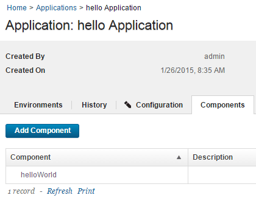

Lesson 3: Create an application
Applications manage components, typically by deploying them into environments.
To create an application, you identify the components that it manages; define at least one environment into which the components are deployed; and create a process to do the work. An environment maps components to agents and handles inventory, among other things. An application process is similar to but not identical to a component process. Application processes are primarily intended to direct underlying component processes and orchestrate multi-component deployments. In this lesson, you create an application and assign the helloWorld component to it.
- Click the Applications tab, and then click Create Application.
- Name the new application something like hello Application.
- Accept the default values for the other fields, and click Create. For the tutorial, the default value for the Notification Scheme is fine. HCL® UrbanCode™ Deploy integrates with LDAP and email servers, which enables the product to send event-based notifications. For example, the
default notification schemesends an email (if an email server is configured, see Server settings) when a deployment finishes. Notifications can also play a role in deployment approvals. See Managing security for information about security roles. - Add the helloWorld component to the application:
- From the Application: hello Application page, click the Components tab. This is the Components tab that is associated with the application, not the Components tab at the top of the page.
- Click Add Component.
- In the Add a Component window, select the helloWorld component, and then click Save. An application can deploy only components that are added to it.
The application includes the helloWorld component, as shown in the following figure. Applications can have any number of components, and components can be included in any number of applications.

In this lesson, you created an application and assigned the helloWorld component to it. On the Components tab, you have the component that is managed by the application listed.
For more information about creating applications, see Creating applications.
Parent topic: Create a simple helloWorld deployment